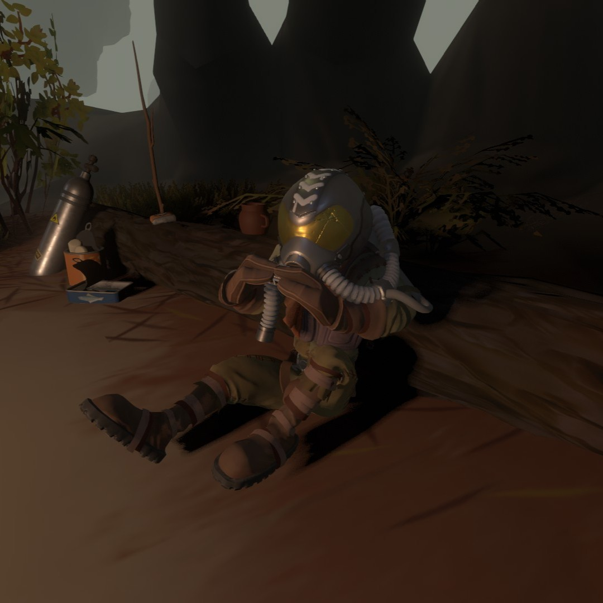
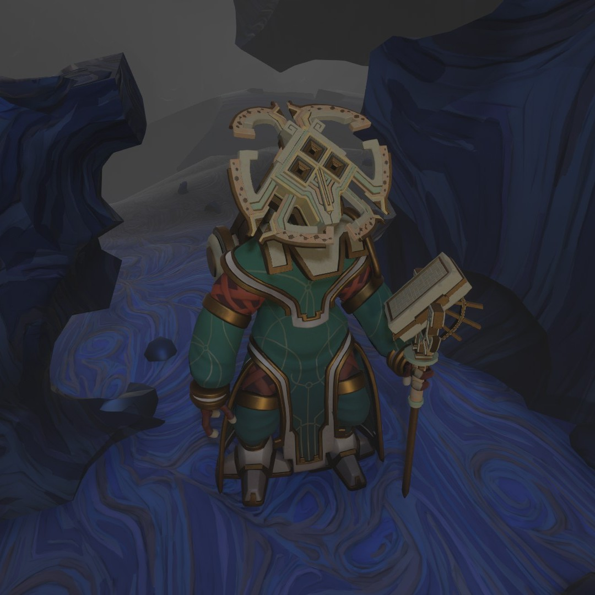
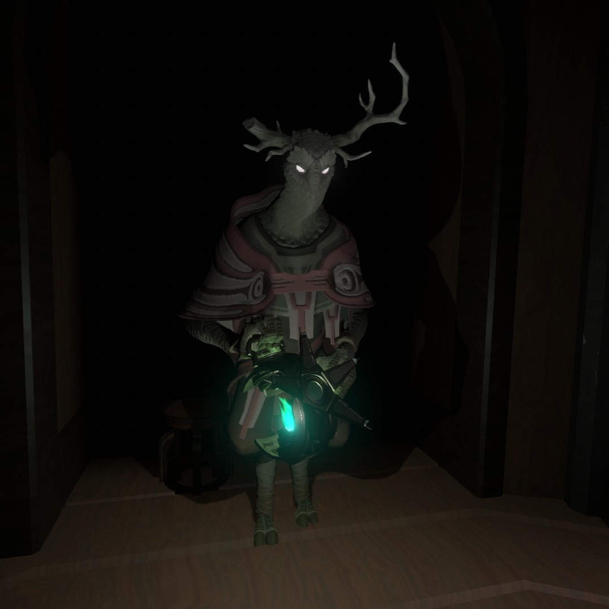

FELDSPAR
Feldspar is one of the Outer Wilds Ventures founders, alongside Gossan, Slate, and Hornfels. Feldspar is described as "absolutely fearless" by Hornfels and is an explorer at heart. They are revered as one of the best pilots in Hearthian history. They were also the first Hearthian to be intentionally launched into space and made the first landing on the Attlerock. They have traveled to all planets in the solar system but have been stranded on Dark Bramble for a long time, leading Hearthians to believe they had died. They can be found at small camp on the jaw of a anglerfish skeleton playing the harmonica. While talking to Feldspar, it becomes clear that they don't seem overly eager to rejoin civilization and have come to enjoy the (relative) peace and quiet of Dark Bramble. They explain that they needed a break from the pressure of being the best that ever was. After finishing exploring the core of Giant's Deep, Feldspar had decided that their next big adventure was Dark Bramble, as no Hearthian had ever been there before. They had been camping here on this skeleton ever since their ship had been clipped by an anglerfish and violently crashed.

SOLANUM
Solanum is the last "surviving" Nomai in the solar system, having come to the Quantum Moon to complete her pilgrimage. A living version of her can be found at the south pole standing under a large vortex in the moon's foggy atmosphere. Attempting to talk to Solanum verbally prompts her to create a few symbolic language stones which will allow the player to have a rudimentary conversation with her about the Eye of the Universe, the Quantum Moon, and about each other. To ask her a question, the player will place two language stones into small stone pillars that she creates. To respond, she will user her staff to print a message on the wall next to her that the player can translate.

THE PRISONER
The Prisoner is an inhabitant of the Stranger locked inside of the Sealed Vault. They were enternally imprisoned after they had betrayed their kin by disabling the blocker that was blocking the Eye of the Universe's signal.